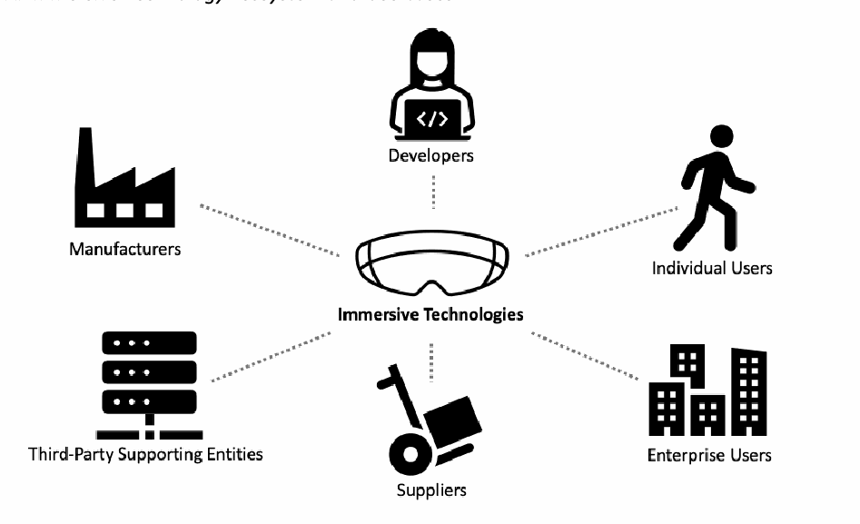
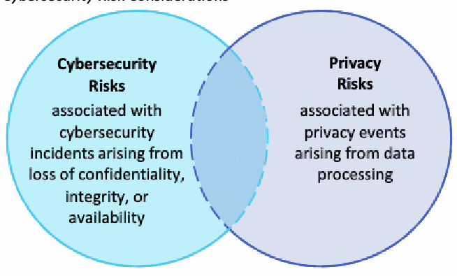

NIST IR 8557 日本語訳
英語タイトル : Report of the Virtual Workshop on Usable Cybersecurity and Privacy for Immersive Technologies日本語タイトル : イマーシブ技術のための使いやすいサイバーセキュリティとプライバシーに関する仮想ワークショップの報告書
公開日 : 2025-05-23
原文URL : https://csrc.nist.gov/pubs/ir/8557/final
翻訳編集 : 自動生成（有志による非公式の日本語訳）, 原文取得日 : 2026-10-31, 訳文 : 183 / 184 ブロック
[要約] NIST IR 8557 は、Symposium in Usable Privacy and Security（SOUPS）が主催した、イマーシブ技術のための使いやすいサイバーセキュリティとプライバシーに関する仮想ワークショップについて報告する文書です。ワークショップは、2024 年 8 月 11 日と 12 日にペンシルベニア州フィラデルフィアで開催された対面形式のシンポジウムに先立ち、2024 年 8 月 7 日に開催され、基調講演 1 件、研究報告の発表 2 件、パネルディスカッションで構成されました。報告書は、そこで得られた考えや知見をより広いコミュニティと共有するために、ワークショップについて報告するものです。知見は、イマーシブ技術の動向、サイバーセキュリティとプライバシー、標準、追加の知見に整理されています。
NIST Internal Report
NIST内部報告書
NIST IR 8557
NIST IR 8557
Report of the Virtual Workshop on Usable Cybersecurity and Privacy for Immersive Technologies
イマーシブ技術のための使いやすいサイバーセキュリティとプライバシーに関する仮想ワークショップの報告書
Michael Fagan Dylan Gilbert
Michael Fagan Dylan Gilbert
This publication is available free of charge from: https://doi.org/10.6028/NIST.IR.8557
この刊行物は次の場所から無料で入手できます。https://doi.org/10.6028/NIST.IR.8557
NIST Internal Report
NIST内部報告書
NIST IR 8557
NIST IR 8557
Report of the Virtual Workshop on Usable Cybersecurity and Privacy for Immersive Technologies
イマーシブ技術のための使いやすいサイバーセキュリティとプライバシーに関する仮想ワークショップの報告書
Michael Fagan Dylan Gilbert*
Michael Fagan Dylan Gilbert*
Applied Cybersecurity Division Information Technology Laboratory
Applied Cybersecurity Division Information Technology Laboratory
*Former NIST employee; all work for this publication was done while at NIST.
*元NIST職員。この刊行物に関する作業はすべてNIST在職中に行われました。
This publication is available free of charge from: https://doi.org/10.6028/NIST.IR.8557
この刊行物は次の場所から無料で入手できます。https://doi.org/10.6028/NIST.IR.8557
May 2025
2025年5月
［米国商務省の紋章。公的な標章のため、この非公式サイトには掲載していません。原本 PDF を参照してください。］
U.S. Department of Commerce Howard Lutnick, Secretary
U.S. Department of Commerce Howard Lutnick, Secretary
National Institute of Standards and Technology
National Institute of Standards and Technology
Craig Burkhardt, Acting Under Secretary of Commerce for Standards and Technology and Acting NIST Director
Craig Burkhardt, Acting Under Secretary of Commerce for Standards and Technology and Acting NIST Director
Certain equipment, instruments, software, or materials, commercial or non-commercial, are identified in this paper in order to specify the experimental procedure adequately. Such identification does not imply recommendation or endorsement of any product or service by NIST, nor does it imply that the materials or equipment identified are necessarily the best available for the purpose.
実験手順を適切に特定するため、この論文では特定の装置、機器、ソフトウェア、材料(商用・非商用を問わない)を示しています。このように示すことは、NISTがいかなる製品やサービスも推奨または支持していることを意味せず、示された材料や装置がその目的に最適であるとも限りません。
There may be references in this publication to other publications currently under development by NIST in accordance with its assigned statutory responsibilities. The information in this publication, including concepts and methodologies, may be used by federal agencies even before the completion of such companion publications. Thus, until each publication is completed, current requirements, guidelines, and procedures, where they exist, remain operative. For planning and transition purposes, federal agencies may wish to closely follow the development of these new publications by NIST.
この刊行物は、法令で定められた責務に従ってNISTが現在策定中の他の刊行物に言及している場合があります。概念や方法論を含む本刊行物の情報は、そうした関連刊行物の完成前であっても、連邦機関が利用してかまいません。したがって、それぞれの刊行物が完成するまでは、現行の要件、ガイドライン、手順が存在する場合には、それらが引き続き有効です。計画と移行のため、連邦機関はNISTによるこれらの新しい刊行物の策定状況を注意深く見守るとよいでしょう。
Organizations are encouraged to review all draft publications during public comment periods and provide feedback to NIST. Many NIST cybersecurity publications, other than the ones noted above, are available at https://csrc.nist.gov/publications.
組織は、パブリックコメント期間中にすべてのドラフト刊行物を確認し、NISTにフィードバックを提供することが推奨されます。上記以外にも、NISTの多くのサイバーセキュリティ関連刊行物が https://csrc.nist.gov/publications で公開されています。
NIST Technical Series Policies Copyright, Use, and Licensing Statements NIST Technical Series Publication Identifier Syntax
NIST Technical Series Policies Copyright, Use, and Licensing Statements NIST Technical Series Publication Identifier Syntax
Publication History Approved by the NIST Editorial Review Board on 2025-05-15
刊行履歴 2025-05-15にNIST編集審査委員会が承認
How to Cite this NIST Technical Series Publication Fagan M, Gilbert D (2025) Report of the Virtual Workshop on Usable Cybersecurity and Privacy for Immersive Technologies. (National Institute of Standards and Technology, Gaithersburg, MD), NIST Interagency or Internal Report (IR) NIST IR 8557. https://doi.org/10.6028/NIST.IR.8557
このNISTテクニカルシリーズ刊行物の引用方法 Fagan M, Gilbert D (2025) Report of the Virtual Workshop on Usable Cybersecurity and Privacy for Immersive Technologies. (National Institute of Standards and Technology, Gaithersburg, MD), NIST Interagency or Internal Report (IR) NIST IR 8557. https://doi.org/10.6028/NIST.IR.8557
Author ORCID iDs Michael Fagan: 0000-0002-1861-2609 Dylan Gilbert: 0009-0003-6061-3757
著者のORCID iD Michael Fagan: 0000-0002-1861-2609 Dylan Gilbert: 0009-0003-6061-3757
Contact Information immersivetech@nist.gov
連絡先 immersivetech@nist.gov
National Institute of Standards and Technology Attn: Applied Cybersecurity Division, Information Technology Laboratory 100 Bureau Drive (Mail Stop 2000) Gaithersburg, MD 20899-2000
National Institute of Standards and Technology Attn: Applied Cybersecurity Division, Information Technology Laboratory 100 Bureau Drive (Mail Stop 2000) Gaithersburg, MD 20899-2000
Additional Information Additional information about this publication is available at https://csrc.nist.gov/pubs/ir/8557/final, including related content, potential updates, and document history.
追加情報 この刊行物に関する追加情報(関連コンテンツ、更新の可能性、変更履歴を含む)は https://csrc.nist.gov/pubs/ir/8557/final で入手できます。
All comments are subject to release under the Freedom of Information Act (FOIA).
すべてのコメントは、情報公開法(FOIA)に基づく公開の対象となります。
Abstract
概要
This document reports on the Virtual Workshop on Usable Cybersecurity and Privacy for Immersive Technologies (the Workshop) hosted by the Symposium in Usable Privacy and Security (SOUPS). The Workshop was held on August 7th, 2024 before the in-person symposium held August 11th and 12th, 2024 in Philadelphia, Pennsylvania. The Workshop consisted of a keynote presentation, two research report presentations, and a panel discussion. This document reports on the Workshop to share the ideas and insights with the broader community.
この文書は、Symposium in Usable Privacy and Security(SOUPS)が主催した、イマーシブ技術のための使いやすいサイバーセキュリティとプライバシーに関する仮想ワークショップ（以下「ワークショップ」）について報告するものです。ワークショップは、2024年8月11日と12日にペンシルベニア州フィラデルフィアで開催された対面形式のシンポジウムに先立ち、2024年8月7日に開催されました。ワークショップは、基調講演1件、研究報告の発表2件、パネルディスカッションで構成されていました。この文書は、ワークショップで共有された考えや知見をより広いコミュニティと共有するために、ワークショップについて報告します。
Keywords
キーワード
augmented reality; cybersecurity; human factors; immersive technologies; mixed reality; privacy; virtual reality.
拡張現実、サイバーセキュリティ、ヒューマンファクター、イマーシブ技術、複合現実、プライバシー、仮想現実。
Reports on Computer Systems Technology
コンピュータシステム技術に関する報告書
The Information Technology Laboratory (ITL) at the National Institute of Standards and Technology (NIST) promotes the U.S. economy and public welfare by providing technical leadership for the Nation’s measurement and standards infrastructure. ITL develops tests, test methods, reference data, proof of concept implementations, and technical analyses to advance the development and productive use of information technology. ITL’s responsibilities include the development of management, administrative, technical, and physical standards and guidelines for the cost-effective security and privacy of other than national security-related information in federal information systems.
米国国立標準技術研究所(NIST)の情報技術研究所(ITL)は、国の測定・標準インフラに技術的なリーダーシップを提供することで、米国経済と公共の福祉を促進しています。ITLは、情報技術の発展と生産的な活用を進めるため、テスト、テスト方法、参照データ、概念実証の実装、技術分析を開発しています。ITLの責務には、連邦情報システムにおける国家安全保障関連以外の情報について、費用対効果の高いセキュリティとプライバシーのための管理、行政、技術、物理の各標準とガイドラインを策定することが含まれます。
Table of Contents
目次
1. Introduction
1. はじめに
Advances in computer vision, data processing, and other technologies has laid the foundation for novel virtual reality (VR), augmented reality (AR), and mixed reality (MR) solutions, collectively called immersive technologies. Immersive technologies are hardware and software systems that create interactive digital visual/spatial environments. These technologies hold promise to drive innovation and economic growth in numerous areas such as workforce [1], accessibility1 [2], and healthcare [3], but they challenge existing assumptions and practices for digital technologies [4][5]. Immersive technologies may create cybersecurity and privacy risks, some perhaps novel and unique that will need to be managed, but they may also have potential for cybersecurity and privacy protections and other risk mitigations [5]. All the while, users are at the center of these technologies, making usability considerations for immersive technologies critical for cybersecurity and privacy. For example, certain communication modalities may have different effectiveness for cybersecurity and privacy information delivered via immersive technologies than on traditional display and input modalities. Not considering usability in this context risks users not using or misusing cybersecurity features, privacy features, or the technologies themselves.
コンピュータビジョン、データ処理、その他の技術の進歩が、総称してイマーシブ技術と呼ばれる、新しい仮想現実(VR)、拡張現実(AR)、複合現実(MR)のソリューションの基盤を築きました。イマーシブ技術とは、インタラクティブなデジタルの視覚的・空間的環境を作り出すハードウェアとソフトウェアのシステムです。これらの技術は、労働力[1]、アクセシビリティ1 [2]、医療[3]など多くの分野でイノベーションと経済成長を促進する可能性を秘めていますが、デジタル技術に関する既存の前提や慣行に課題を突きつけます[4][5]。イマーシブ技術は、サイバーセキュリティとプライバシーのリスクを生み出す可能性があり、その中には管理が必要な新規で固有のものもあるかもしれませんが、サイバーセキュリティとプライバシーの保護やその他のリスク低減に役立つ可能性もあります[5]。ユーザーは常にこれらの技術の中心にいるため、イマーシブ技術のユーザビリティへの配慮は、サイバーセキュリティとプライバシーにとって極めて重要です。たとえば、イマーシブ技術を通じて提供されるサイバーセキュリティやプライバシーの情報は、従来のディスプレイや入力方式の場合と比べて、伝達方式によって有効性が異なる場合があります。この文脈でユーザビリティを考慮しないと、ユーザーがサイバーセキュリティ機能、プライバシー機能、あるいは技術そのものを使わなくなったり、誤用したりするおそれがあります。
With this background, the National Institute of Standards and Technology (NIST) organized the Virtual Workshop on Usable Cybersecurity and Privacy for Immersive Technologies (the Workshop) hosted by the Symposium in Usable Privacy and Security (SOUPS). The Workshop was held on August 7th, 2024 before the in-person symposium held August 11th and 12th, 2024 in Philadelphia, Pennsylvania. The Workshop attracted over two dozen registrants and consisted of a keynote presentation by Dr. Louis Rosenberg titled “Our Next Reality: the Emerging Dangers of our AI-powered Immersive Future,” two research report presentations, and a panel discussion.
このような背景から、米国国立標準技術研究所(NIST)は、Symposium in Usable Privacy and Security(SOUPS)が主催する、イマーシブ技術のための使いやすいサイバーセキュリティとプライバシーに関する仮想ワークショップ（以下「ワークショップ」）を企画しました。ワークショップは、2024年8月11日と12日にペンシルベニア州フィラデルフィアで開催された対面形式のシンポジウムに先立ち、2024年8月7日に開催されました。ワークショップには24名を超える登録者が参加し、Louis Rosenberg博士による「Our Next Reality: the Emerging Dangers of our AI-powered Immersive Future」と題した基調講演、2件の研究報告の発表、パネルディスカッションで構成されていました。
This document reports on the virtual workshop to share the ideas and insights with the broader community. The rest of this report documents the event and outlines observations about immersive technologies’ cybersecurity and privacy considerations from the discussions and presentations:
この文書は、考えや知見をより広いコミュニティと共有するために、この仮想ワークショップについて報告するものです。本報告書の以降の部分では、イベントを記録し、議論や発表から得られた、イマーシブ技術のサイバーセキュリティとプライバシーに関する考慮事項についての所見を概説します。
•Next, background is provided on the origins of this virtual workshop.
•次に、この仮想ワークショップの成り立ちに関する背景を示します。
•Then, the details of the event are documented.
•続いて、イベントの詳細を記録します。
•Then, insights from the virtual workshop are reported.
•続いて、仮想ワークショップから得られた知見を報告します。
•Finally, the report is concluded.
•最後に、報告書をまとめます。
2. Background
2. 背景
The Virtual Workshop on Usable Cybersecurity and Privacy for Immersive Technologies was held to explore cybersecurity and privacy related to immersive technologies (i.e., Virtual Reality, Augmented Reality, and Mixed Reality). The Workshop was aimed to help NIST gain insights related to the following research questions:
イマーシブ技術(すなわち、仮想現実、拡張現実、複合現実)に関するサイバーセキュリティとプライバシーを探るため、イマーシブ技術のための使いやすいサイバーセキュリティとプライバシーに関する仮想ワークショップが開催されました。ワークショップは、NISTが次の研究課題に関する知見を得る助けとなることを目的としていました。
1.What are the new technologies, use cases, applications, implementations, solutions, etc. related to AR/VR/MR?
1.AR/VR/MRに関連する新しい技術、ユースケース、アプリケーション、実装、ソリューションなどにはどのようなものがありますか。
2.What privacy and cybersecurity considerations and implications are there for development and adoption of these technologies?
2.これらの技術の開発と導入において、どのようなプライバシーとサイバーセキュリティの考慮事項や影響がありますか。
3.What standards and other resources exist for immersive technology cybersecurity and privacy? Are there gaps that can/should be filled?
3.イマーシブ技術のサイバーセキュリティとプライバシーに関して、どのような標準やその他のリソースが存在しますか。埋められる、あるいは埋めるべきギャップはありますか。
Before the Workshop, two public-facing deliverables were published to support the project. A NIST blog post announced the project and helped spur engagements with the community. In addition, a “Topics for Feedback” document was posted on the NIST website for easy sharing with the community. The topics highlighted in the document were:
ワークショップに先立ち、プロジェクトを支援するために、一般向けの成果物が2件公開されました。NISTのブログ記事でプロジェクトを発表し、コミュニティとの交流を促しました。加えて、コミュニティと容易に共有できるよう、「Topics for Feedback」文書をNISTのウェブサイトに掲載しました。この文書で取り上げたトピックは次のとおりです。
1.Immersive Technology Ecosystem and Use Cases - “[T]he ecosystem of entities that support immersive technologies. This ecosystem encompasses a range of entities and roles that may have complex, multi-directional relationships. Complexity can increase when entities are supported by a chain of sub-entities (e.g., manufacturers supported by multiple component suppliers).”
1.イマーシブ技術のエコシステムとユースケース - 「イマーシブ技術を支える主体のエコシステム。このエコシステムには、複雑で多方向の関係を持ちうるさまざまな主体と役割が含まれます。主体が下位の主体の連鎖に支えられている場合(たとえば、複数の部品サプライヤーに支えられた製造業者)には、複雑さが増す可能性があります。」
2.Immersive Technology Ecosystem and Use Cases - “[C]urrent and potential future uses and misuses of immersive technologies across all applicable sectors and user bases, including any barriers to adoption.”
2.イマーシブ技術のエコシステムとユースケース - 「導入に対する障壁を含め、該当するすべての分野とユーザー層における、イマーシブ技術の現在および将来の可能性のある利用と誤用。」
3.Privacy and Cybersecurity Risk Considerations - “Immersive technologies may generate cybersecurity and privacy risks, some of which can be novel or mix in complex ways.”
3.プライバシーとサイバーセキュリティのリスクに関する考慮事項 - 「イマーシブ技術は、サイバーセキュリティとプライバシーのリスクを生み出す可能性があり、その一部は新規であったり、複雑な形で混ざり合ったりすることがあります。」
4.Immersive Technology Standards and Risk Management Resources - “Immersive technologies may break existing cybersecurity and privacy assumptions, requiring adaptation or update to tools and techniques documented in standards and guidelines. Additionally, immersive technologies may warrant new standards and guidelines efforts to complement existing resources.”
4.イマーシブ技術の標準とリスクマネジメントのリソース - 「イマーシブ技術は、既存のサイバーセキュリティとプライバシーの前提を崩し、標準やガイドラインに記載されたツールや技法の適応または更新を必要とする場合があります。さらに、イマーシブ技術には、既存のリソースを補完する新しい標準やガイドラインの取り組みが必要となる場合があります。」
Under each of these topics a series of specific questions were listed to guide feedback. The full “Topics for Feedback” document is included in Appendix B of this report.
これらのトピックごとに、フィードバックを導くための具体的な質問が列挙されました。「Topics for Feedback」文書の全文は、この報告書の付録Bに収録しています。
3. Event Report
3. イベント報告
SOUPS hosted the Workshop on the afternoon of August 7th, 2024. NIST posted an external event website to promote the Workshop to immersive technology community members, while the organizers of the SOUPS conference also promoted the Workshop in their outreach. Leading up to the Workshop, the community was given the opportunity to submit research or position papers related to one or more of the following topics:
SOUPSは、2024年8月7th日の午後にワークショップを主催しました。NISTは、イマーシブ技術のコミュニティの構成員にワークショップを周知するため外部のイベントウェブサイトを公開し、SOUPSカンファレンスの主催者も、自らの広報活動でワークショップを周知しました。ワークショップに先立ち、コミュニティには、次のトピックの1つ以上に関する研究論文またはポジションペーパーを提出する機会が与えられました。
•Usable cybersecurity and privacy considerations for immersive technologies, with particular interest in novel considerations.
•イマーシブ技術のための使いやすいサイバーセキュリティとプライバシーに関する考慮事項(特に新規の考慮事項への関心が高い)。
•Potential approaches for usable cybersecurity and privacy (e.g., risk mitigations) for immersive technology solutions and use cases.
•イマーシブ技術のソリューションとユースケースにおける、使いやすいサイバーセキュリティとプライバシーのための潜在的なアプローチ(たとえば、リスクの低減策)。
•Potential usable cybersecurity and privacy mitigations that may utilize immersive technologies to deliver protections.
•イマーシブ技術を利用して保護を提供しうる、使いやすいサイバーセキュリティとプライバシーの低減策の可能性。
•How usable cybersecurity and privacy impact, or are impacted by, other trust factors (i.e., safety, resiliency, reliability) for immersive technology solutions and use cases.
•イマーシブ技術のソリューションとユースケースにおいて、使いやすいサイバーセキュリティとプライバシーが他の信頼要因(すなわち、安全性、レジリエンス、信頼性)にどのように影響を与え、またその影響を受けますか。
•Insights for standards and standards development for immersive technologies and use cases.
•イマーシブ技術とそのユースケースの標準および標準策定に関する知見。
These topics were listed and expanded upon in a Call for Papers. The Call for Papers is provided in Appendix C of this report for reference. Two research papers were received and reviewed by the Workshop’s Technical Program Committee. Both papers were accepted to be presented at the workshop:
これらのトピックは、論文募集(Call for Papers)に列挙され、詳しく説明されました。参考として、論文募集をこの報告書の付録Cに示します。2本の研究論文が寄せられ、ワークショップの技術プログラム委員会が審査しました。両論文とも、ワークショップで発表するために採択されました。
1.Trusted Inter-Reality Infrastructure: Building Trust within Entities (Digest)
1.Trusted Inter-Reality Infrastructure: Building Trust within Entities (Digest)
a.Akira Kanaoka, Toho University and Takuro Yonezawa, Nagoya University
a.Akira Kanaoka, Toho University and Takuro Yonezawa, Nagoya University
2.Understanding the Interdependence of Trust Factors and Usability in Cybersecurity and Privacy for Immersive Technologies
2.Understanding the Interdependence of Trust Factors and Usability in Cybersecurity and Privacy for Immersive Technologies
a.Bhanujeet Choudhary, David Tulacz, Kavya Pearlman, and Nandita Rao Narla, X Reality Safety Intelligence (XRSI)
a.Bhanujeet Choudhary, David Tulacz, Kavya Pearlman, and Nandita Rao Narla, X Reality Safety Intelligence (XRSI)
Both papers are available as Supplemental Content on this document’s CSRC page.
両論文は、この文書のCSRCページの補足コンテンツ(Supplemental Content)として入手できます。
The workshop agenda included an opening keynote presentation from Dr. Louis Rosenberg from the Unanimous AI and the Responsible Metaverse Alliance titled, “Our Next Reality: the Emerging Dangers of our AI-powered Immersive Future.” Dr. Rosenberg’s talk highlighted potential privacy risks of immersive technologies supported by data-fueled artificial intelligence technologies and discussed the way these risks could be amplified by user interface designs (e.g., so-called “dark patterns”) and other manipulative algorithm designs.
ワークショップのプログラムは、Unanimous AIおよびResponsible Metaverse AllianceのLouis Rosenberg博士による、「Our Next Reality: the Emerging Dangers of our AI-powered Immersive Future」と題した冒頭の基調講演で始まりました。Rosenberg博士の講演は、データを燃料とする人工知能技術に支えられたイマーシブ技術に潜むプライバシーリスクを取り上げ、こうしたリスクが、ユーザーインターフェースの設計(たとえば、いわゆる「ダークパターン」)やその他の操作的なアルゴリズムの設計によって増幅されうることを論じました。
The keynote was followed by a presentation from an author of each research paper where the authors had an opportunity to gather feedback on and promote their work. The last component of the Workshop was a panel discussion moderated by Dylan Gilbert from NIST and featuring the following panelists:
基調講演に続いて、各研究論文の著者の1人が発表を行い、自らの研究についてフィードバックを集め、広める機会を得ました。ワークショップの最後は、NISTのDylan Gilbertが司会を務めるパネルディスカッションで、次のパネリストが登壇しました。
1.Elizabeth Hyman, President and CEO, XR Association
1.Elizabeth Hyman, President and CEO, XR Association
2.Christopher Lafayette, Emergent Technologist, Gatherverse
2.Christopher Lafayette, Emergent Technologist, Gatherverse
3.Jameson Spivack, Senior Policy Analyst for Immersive Technologies, Future of Privacy Forum
3.Jameson Spivack, Senior Policy Analyst for Immersive Technologies, Future of Privacy Forum
The panel provided a lively discussion of current and upcoming trends pertinent to usable cybersecurity and privacy for immersive technologies and gave the audience an opportunity to engage with experts in the immersive technology community.
パネルでは、イマーシブ技術のための使いやすいサイバーセキュリティとプライバシーに関連する現在および今後の動向について活発な議論が行われ、聴衆がイマーシブ技術コミュニティの専門家と交流する機会となりました。
4. Insights
4. 知見
The Workshop yielded numerous insights organized below around the project’s core research areas of immersive technology trends, cybersecurity, privacy, and standards. Additional insights relevant to the immersive tech ecosystem and standards and risk management which did not fit cleanly under the project’s core research questions are included as well. Please note that these insights are not formal recommendations from the authors or NIST or represent the consensus of the participants. They are provided to report the various points of view heard at the Workshop.
ワークショップからは多くの知見が得られました。以下では、プロジェクトの中核的な研究領域であるイマーシブ技術の動向、サイバーセキュリティ、プライバシー、標準に沿って整理します。プロジェクトの中核的な研究課題には収まりきらなかった、イマーシブ技術のエコシステムや、標準とリスクマネジメントに関する追加の知見も含めています。なお、これらの知見は、著者やNISTによる正式な勧告ではなく、また、参加者の総意を表すものでもありません。ワークショップで聞かれたさまざまな見解を報告するために示すものです。
4.1. Insights Related to Immersive Technology Trends: New Frontiers, but Potential Pitfalls
4.1. イマーシブ技術の動向に関する知見: 新たなフロンティアと潜在的な落とし穴
The community shared many unique aspects of immersive technologies. For example, the types and number of sensors used to power immersive technologies are unique, and research is ongoing into ways to integrate emerging technologies (e.g., incorporating quantum sensors to improve Lidar for 3D modelling). Beneficial current and future use cases were shared as well. In this context, the term use case was used quite broadly by the audience and was used to refer to applications of immersive technologies or spaces where there are potential immersive technology applications. Dangerous, impossible, or expensive use cases were identified as being well-suited for immersive technologies. In addition, use cases for immersive technology application are emerging across myriad sectors, including professional training (e.g., surgeons operating on digital cadavers), personalized therapeutic experiences, architecture and construction, and immersive entertainment experiences.
コミュニティは、イマーシブ技術の多くの固有の側面を共有しました。たとえば、イマーシブ技術を支えるセンサーの種類と数は独特であり、新興技術を統合する方法（たとえば、3Dモデリングのために量子センサーを組み込んでLidarを改善するなど）の研究が進められています。現在および将来の有益なユースケースも共有されました。この文脈で、ユースケースという用語は聴衆によってかなり広い意味で使われ、イマーシブ技術の応用、またはイマーシブ技術の応用が見込まれる領域を指していました。危険である、不可能である、または費用がかかるユースケースが、イマーシブ技術に適しているものとして特定されました。加えて、イマーシブ技術を応用するユースケースは、専門職の訓練（たとえば、外科医がデジタルの献体で手術を行う）、個人に合わせた治療体験、建築・建設、没入型のエンターテインメント体験など、数多くの分野で生まれつつあります。
But some points of caution were noted. Participants raised potential safety and behavioral concerns, including some that are novel (e.g., time dilation, immersive cyberbullying and harassment, and VR “hangovers” (i.e., disassociation/derealization)). Discussions highlighted that the scope, scale, and persistence of data processing as well as the scope and scale of inferences and potential for behavioral manipulation associated with immersive technologies (especially when powered by artificial intelligence (AI)) sets it apart from other technologies. Throughout the workshop, consistent connections to AI were drawn by participants, highlighting that AI has a close relationship to immersive technologies. It was argued by some that multi-modal AI is immersive technology. AI agents communicating through audio interface is a likely future use case.
一方で、いくつかの注意点も指摘されました。参加者は、安全面や行動面の懸念の可能性を挙げ、その中には新しいもの(たとえば、時間感覚の変容、没入型のサイバーいじめや嫌がらせ、VRの「二日酔い」(すなわち、解離や現実感喪失))も含まれていました。議論では、イマーシブ技術に伴うデータ処理の範囲、規模、永続性、さらに推論の範囲と規模、行動操作の可能性(特に人工知能(AI)に支えられている場合)が、イマーシブ技術を他の技術から際立たせていることが強調されました。ワークショップを通じて、参加者は一貫してAIとの関連を指摘し、AIがイマーシブ技術と密接な関係にあることを浮き彫りにしました。マルチモーダルAIはイマーシブ技術だという主張もありました。音声インターフェースを通じて通信するAIエージェントは、将来のユースケースとなる可能性が高いとされました。
4.2. Insights Related to Cybersecurity and Privacy: Immense Scale and Personal Impact
4.2. サイバーセキュリティとプライバシーに関する知見: 巨大な規模と個人への影響
Many individual considerations for cybersecurity and privacy were discussed. One consistent point of discussion was the scope and scale of data needed to make immersive technologies function. Specifically, the community highlighted that the context in which data processing takes place and privacy and cybersecurity risks arise (i.e., immersive worlds powered by granular biometric, spatial, and behavioral/emotional data) is unique to immersive technologies. Privacy and cybersecurity impacts may be amplified by immersive technologies due to the nature and scale of data processing. Novel types of data processing activities include biometrics for uses other than identity management, real-time spatial mapping, and the combination of user behavioral and physical data. Also, virtual environments require significant amounts of data and similarly significant technological protections for data (e.g., encryption, local or on-device processing). This can present costs and trade-offs (e.g., privacy and security vs. safety).
サイバーセキュリティとプライバシーに関する多くの個別の考慮事項が議論されました。一貫した論点の1つは、イマーシブ技術が機能するために必要なデータの範囲と規模でした。特にコミュニティは、データ処理が行われ、プライバシーとサイバーセキュリティのリスクが生じる文脈(すなわち、きめ細かな生体情報、空間情報、行動・感情のデータに支えられたイマーシブな世界)が、イマーシブ技術に固有のものであることを強調しました。データ処理の性質と規模のために、プライバシーとサイバーセキュリティへの影響がイマーシブ技術によって増幅される可能性があります。新しい種類のデータ処理活動には、身元管理以外の目的での生体情報の利用、リアルタイムの空間マッピング、ユーザーの行動データと身体データの組み合わせがあります。また、仮想環境には大量のデータが必要であり、同様に、データに対する相応の技術的保護(たとえば、暗号化、ローカルまたはデバイス上での処理)も必要です。これにはコストやトレードオフ(たとえば、プライバシーおよびセキュリティと安全性との間のトレードオフ)が伴う場合があります。
Another common point was the personal nature of immersive technologies. Immersive technologies can have more precise tailoring of experiences based on emotional states or inferences from behavioral and biometric data. Highly personalized environments can facilitate benefits to privacy and cybersecurity (e.g., “gamifying” privacy and cybersecurity to make it more interesting, understandable, and manageable; use of intelligent, edge-based virtual agents to help users improve their privacy and security outcomes). These tailored experiences can, however, also increase risks of individuals being manipulated in ways which could adversely impact their privacy and the security of their data. Though behavioral norms are important, they are challenging to establish for experiences that may not be currently possible or are in a nascent state (i.e., many experiences and behaviors for immersive technologies are currently speculative). Individuals noted that there is a lack of clarity around consumer expectations of privacy and cybersecurity in immersive environments due to their relative novelty and a current lack of normative and ethical frameworks.
もう1つの共通の論点は、イマーシブ技術の個人的な性質でした。イマーシブ技術では、感情状態や、行動データおよび生体データからの推論に基づいて、体験をより正確に調整できます。高度にパーソナライズされた環境は、プライバシーとサイバーセキュリティに利点をもたらしえます(たとえば、プライバシーとサイバーセキュリティを「ゲーム化」して、より興味を引き、理解しやすく、管理しやすくする、エッジベースの知的な仮想エージェントを使って、ユーザーがプライバシーとセキュリティの成果を高められるよう支援するなど)。しかし、こうした調整された体験は、個人が操作され、プライバシーやデータのセキュリティに悪影響が及ぶリスクを高める可能性もあります。行動規範は重要ですが、現時点では不可能であったり、発展の初期段階にあったりする体験(すなわち、イマーシブ技術の多くの体験や行動は現時点では推測の域にあります)について確立することは困難です。参加者からは、イマーシブ環境は比較的新しく、規範的・倫理的な枠組みも現時点では存在しないため、イマーシブ環境におけるプライバシーとサイバーセキュリティについて消費者が何を期待するかが明確でない、との指摘がありました。
The increasing integration of AI into immersive technologies underscores the importance of managing privacy and cybersecurity risks throughout the data and system development life cycle, but developers may lack incentive or requirements to do so.
イマーシブ技術へのAIの統合が進んでいることは、データとシステムの開発ライフサイクル全体を通じてプライバシーとサイバーセキュリティのリスクを管理することの重要性を示していますが、開発者にはそうする動機や要件がない場合があります。
Specific to privacy, the following key considerations for immersive technologies were highlighted through discussions. Participants noted that there could be tensions between data minimization requirements and the amount and variety of data needed to power immersive technologies. Also, principles such as consent, user control, and autonomy may be difficult to uphold for involuntary and unconscious or subconscious behaviors or physical acts.
プライバシーに特有のものとして、議論を通じてイマーシブ技術に関する次の主な考慮事項が強調されました。参加者は、データ最小化の要件と、イマーシブ技術を動かすために必要なデータの量や種類との間に緊張関係が生じうると指摘しました。また、同意、ユーザーによる制御、自律性といった原則は、不随意で無意識または潜在意識下の行動や身体的な行為については守ることが難しい場合があります。
4.3. Insights Related to Standards: Pre-Standardization Research Needed
4.3. 標準に関する知見: 標準化以前の研究の必要性
The community recommended several areas related to immersive technologies that could benefit from additional standardization efforts. Usability is a hurdle for hardware and software standards (e.g., ways to manage multiple accounts within the same device). Identity standards for immersive tech could be helpful to address this. Standards for trustworthy AI (e.g., watermarking and other content authentication) would be welcomed.
コミュニティは、イマーシブ技術に関連して、追加の標準化の取り組みが有益となりうる領域をいくつか挙げました。ユーザビリティの確保は、ハードウェアとソフトウェアの標準における課題です(たとえば、同じデバイス内で複数のアカウントを管理する方法)。これに対処するには、イマーシブ技術のための識別(アイデンティティ)の標準が役立つ可能性があります。信頼できるAIのための標準(たとえば、電子透かしやその他のコンテンツ認証)も歓迎されるでしょう。
In discussions, a number of specific areas for pre-standardization research that NIST could support were brought to the fore, such as taxonomies (i.e., terms/definitions) that are tied to specific use cases. Participants noted that a shared taxonomy of data types and accompanying risks could also be useful. Additional topics related to standards that were noted were measurement of accuracy/efficacy of immersive tech and associated impacts and the development of a typology of risk.
議論では、NISTが支援しうる標準化以前の研究の具体的な領域が数多く挙がりました。たとえば、特定のユースケースに結び付けたタクソノミー(すなわち、用語と定義)があります。参加者は、データ種別とそれに伴うリスクについての共通のタクソノミーも有用でありうると指摘しました。標準に関連して指摘された追加のトピックには、イマーシブ技術の正確性・有効性とそれに伴う影響の測定、およびリスクの類型の策定がありました。
4.4. Additional Insights: Challenging the Landscape with Unique Use Cases and Considerations
4.4. 追加の知見: 独自のユースケースと考慮事項が突きつける課題
Some insights did not fit cleanly into the areas above. It was highlighted that sectors have specific considerations. The education sector is a rapidly growing part of the immersive technologies ecosystem, but gaps in teacher and learner knowledge and understanding about the technologies (e.g., their educational value, how they can be used, and potential risks) is a barrier to adoption. There is noted growth in healthcare applications as well. For example, large hospitals are training physicians on immersive technologies for pain mitigation, stroke rehab, and stress treatment. Wearable sensors are capturing biological signals related to attention and behavior. This can help with psychiatry and psychology and to assist with treating physical impairments such as vision, hearing, or speech.
上記の領域にうまく収まらない知見もありました。分野ごとに固有の考慮事項があることが強調されました。教育分野はイマーシブ技術のエコシステムの中で急速に成長している部分ですが、教師と学習者の双方における技術に関する知識や理解(たとえば、教育上の価値、利用方法、潜在的なリスク)の不足が、導入の障壁となっています。医療分野の応用も成長しているとされています。たとえば、大規模病院では、痛みの緩和、脳卒中のリハビリ、ストレスの治療のために、医師にイマーシブ技術の訓練を行っています。ウェアラブルセンサーは、注意や行動に関連する生体信号を捕捉しています。こうした信号の捕捉は精神医学や心理学に役立つほか、視覚、聴覚、発話などの身体的な障害の治療を支援するのにも役立ちます。
Human-focused considerations were also discussed. Legal and regulatory requirements related to accessibility may not translate well to immersive technologies, potentially creating barriers to federal government procurement. Ownership or control over the technologies was noted to have implications for impact on individuals. For example, the subscription model has different effects (potentially more adverse for individuals) than ownership models.
人間を中心とした考慮事項も議論されました。アクセシビリティに関する法的・規制上の要件は、イマーシブ技術にうまく当てはまらない可能性があり、連邦政府の調達の障壁になりうるとされました。技術の所有または制御が、個人への影響に関わることも指摘されました。たとえば、サブスクリプションモデルは、所有モデルとは異なる影響(個人にとってより不利になる可能性があります)をもたらします。
It was also noted that some aspects of the immersive technology ecosystem may be centralized (i.e., the same organizations making hardware, software, and applications). This has the possibility to create benefits to privacy and cybersecurity but may raise concerns around market diversity, competition, and potential limitations and drawbacks for consumers.
イマーシブ技術のエコシステムの一部の側面は、集中化されている場合がある(すなわち、同じ組織がハードウェア、ソフトウェア、アプリケーションを作っている)ことも指摘されました。これはプライバシーとサイバーセキュリティに利点をもたらす可能性がありますが、市場の多様性、競争、消費者にとっての潜在的な制約や欠点についての懸念を生む可能性もあります。
While immersive technologies raise some unique cybersecurity and privacy considerations, existing NIST risk management guidelines, tools, and resources can support risk-based and ethical decision-making in the development and use of immersive systems, products, and services. A current lack of ethical and normative frameworks specifically for immersive technologies may introduce challenges to understanding individuals’ expectations of privacy and the security of their data in immersive environments, but development of such frameworks falls outside of NIST’s purview. Incentives are a key driver in cybersecurity and privacy best practices. This underscores the importance of lowering technical barriers to adoption of technologies that may be useful for managing risks in immersive environments (e.g., privacy-enhancing technologies), while also acknowledging non-technical considerations that may disincentivize effective risk management, such as legal uncertainty, knowledge gaps, market consolidation, etc.
イマーシブ技術はサイバーセキュリティとプライバシーに関する固有の考慮事項をいくつか提起しますが、NISTの既存のリスクマネジメントのガイドライン、ツール、リソースは、イマーシブなシステム、製品、サービスの開発と利用におけるリスクベースで倫理的な意思決定を支援できます。イマーシブ技術に特化した倫理的・規範的な枠組みが現時点で存在しないことは、イマーシブ環境における個人のプライバシーへの期待やデータのセキュリティを理解するうえでの課題となる可能性がありますが、そうした枠組みの策定はNISTの権限の範囲外です。インセンティブは、サイバーセキュリティとプライバシーのベストプラクティスの重要な推進力です。このことは、イマーシブ環境でのリスク管理に役立つ可能性のある技術(たとえば、プライバシー強化技術)の導入に対する技術的な障壁を下げることの重要性を示すとともに、効果的なリスクマネジメントの動機を損ないうる非技術的な考慮事項(法的な不確実性、知識の不足、市場の寡占化など)を認識することの重要性も示しています。
5. Conclusion
5. 結論
Immersive technologies pose great benefits for the nation and may be critical to several sectors in the future such as education, industrial maintenance, and entertainment. That said, many aspects of the technology space and standards are nascent, hindering specific discussion of cybersecurity and privacy. Though there are questions that need consideration related to cybersecurity and privacy of immersive technologies, as noted in the Section 4, existing NIST risk management guidelines, tools, and resources can support risk-based and ethical decision-making in the development and use of immersive systems, products, and services. Thus, participants in immersive technology ecosystems (e.g., product manufacturers and providers, supporting service providers, institutional and individual users) can leverage the existing NIST cybersecurity and privacy portfolio, either directly or through tailoring and profiling. Through this mechanism, as NIST has done before, practical application of cybersecurity and privacy risk management can be supported in the near term with new projects and research directions potentially identified through continued community engagement.
イマーシブ技術は国に大きな利益をもたらし、将来、教育、産業保守、エンターテインメントなどの複数の分野で不可欠になる可能性があります。とはいえ、技術分野と標準の多くの側面は発展の初期段階にあり、サイバーセキュリティとプライバシーに関する具体的な議論を妨げています。第4節で述べたとおり、イマーシブ技術のサイバーセキュリティとプライバシーに関して検討が必要な疑問はあるものの、NISTの既存のリスクマネジメントのガイドライン、ツール、リソースは、イマーシブなシステム、製品、サービスの開発と利用におけるリスクベースで倫理的な意思決定を支援できます。したがって、イマーシブ技術のエコシステムの参加者(たとえば、製品の製造業者・提供者、支援サービスの提供者、組織および個人のユーザー)は、NISTの既存のサイバーセキュリティとプライバシーのポートフォリオを、そのまま、あるいはテーラリングやプロファイリングを通じて活用できます。この仕組みを通じて、NISTがこれまでもそうしてきたように、サイバーセキュリティとプライバシーのリスクマネジメントの実践的な適用を短期的に支援できるほか、コミュニティとの継続的な関与を通じて、新たなプロジェクトや研究の方向性が見いだされる可能性があります。
References
参考文献
[1] XR Association (2025) Education in XR. (XR Association, Washington, D.C.). Available at https://xra.org/wp-content/uploads/2023/05/XRA_Slicks_Education_V1.pdf-1.pdf
[1] XR Association (2025) Education in XR. (XR Association, Washington, D.C.). 次を参照: https://xra.org/wp-content/uploads/2023/05/XRA_Slicks_Education_V1.pdf-1.pdf
[2] XR Association (2025) Inclusive XR. (XR Association, Washington, D.C.). Available at https://xra.org/wp-content/uploads/2023/05/XRA_Slicks_Accessibility_V3.pdf-1.pdf
[2] XR Association (2025) Inclusive XR. (XR Association, Washington, D.C.). 次を参照: https://xra.org/wp-content/uploads/2023/05/XRA_Slicks_Accessibility_V3.pdf-1.pdf
[3] XR Association (2025) XR Technology and Healthcare. (XR Association, Washington, D.C.). Available at https://xra.org/wp-content/uploads/2023/05/XRA_Slicks_Healthcare_V2.pdf-1.pdf
[3] XR Association (2025) XR Technology and Healthcare. (XR Association, Washington, D.C.). 次を参照: https://xra.org/wp-content/uploads/2023/05/XRA_Slicks_Healthcare_V2.pdf-1.pdf
[4] Santos, N. M., & Peslak, A. (2022). Immersive technologies: Benefits, timeframes, and obstacles. Issues in Information Systems, 23(2). https://iacis.org/iis/2022/2_iis_2022_170-184.pdf
[4] Santos, N. M., & Peslak, A. (2022). Immersive technologies: Benefits, timeframes, and obstacles. Issues in Information Systems, 23(2). https://iacis.org/iis/2022/2_iis_2022_170-184.pdf
[5] Giaretta, A. (2024). Security and privacy in virtual reality: a literature survey. Virtual Reality, 29(1), 10. https://link.springer.com/content/pdf/10.1007/s10055-024-01079-9.pdf
[5] Giaretta, A. (2024). Security and privacy in virtual reality: a literature survey. Virtual Reality, 29(1), 10. https://link.springer.com/content/pdf/10.1007/s10055-024-01079-9.pdf
Appendix A. List of Symbols, Abbreviations, and Acronyms
付録A 記号、略語、頭字語の一覧
AI Artificial Intelligence
AI Artificial Intelligence(人工知能)
AR Augmented Reality
AR Augmented Reality(拡張現実)
MR Mixed Reality
MR Mixed Reality(複合現実)
SOUPS Symposium on Usable Privacy and Security
SOUPS Symposium on Usable Privacy and Security
VR Virtual Reality
VR Virtual Reality(仮想現実)
XRSI X Reality Safety Intelligence
XRSI X Reality Safety Intelligence(X Reality Safety Intelligence)
Appendix B. Topics for Feedback Distributed Before the Workshop
付録B ワークショップ前に配布したフィードバックのトピック
Immersive Technologies Cybersecurity and Privacy Topics for Feedback
イマーシブ技術のサイバーセキュリティとプライバシーに関するフィードバックのトピック
I. Background
I. 背景
Advances in computer vision, data processing, and other technologies have enabled novel Virtual Reality (VR), Augmented Reality (AR), and Mixed Reality (MR) solutions, collectively called immersive technologies. In general, immersive technologies are hardware and software systems that create interactive digital visual and spatial environments that users can inhabit. These immersive environments can vary in the extent to which they incorporate virtual components. For example, AR layers digital objects over the user’s “real-world” environment, while VR can transport users to an entirely virtual alternate environment. These technologies hold promise to drive innovation and economic growth in numerous areas such as workforce, accessibility, and healthcare. Their creation and use can, however, generate cybersecurity and privacy risks, some of which may be novel.
コンピュータビジョン、データ処理などの技術の進歩により、仮想現実(VR)、拡張現実(AR)、複合現実(MR)という新しいソリューション(総称してイマーシブ技術)が可能になりました。一般に、イマーシブ技術とは、ユーザーが入り込めるインタラクティブなデジタルの視覚的・空間的環境を作り出すハードウェアとソフトウェアのシステムです。こうしたイマーシブ環境は、仮想的な要素をどの程度取り入れるかによって異なります。たとえば、ARはユーザーの「現実世界」の環境にデジタルオブジェクトを重ねますが、VRはユーザーを完全に仮想的な別の環境へ移すことができます。これらの技術は、労働力、アクセシビリティ、医療など多くの分野でイノベーションと経済成長を促進する可能性を秘めています。しかし、その作成と利用はサイバーセキュリティとプライバシーのリスクを生み出す可能性があり、その一部は新規のものかもしれません。
These new technologies have interdisciplinary and integrative implications as well. They mix knowledge and approaches from myriad fields, such as neuroscience, psychology, behavioral studies, and statistics. Further, their integration with other emergent technologies like Artificial Intelligence (AI) and Internet of Things (IoT) adds complexity to the unique context in which cybersecurity and privacy risks can arise and will need to be managed.
これらの新しい技術には、学際的で統合的な含意もあります。神経科学、心理学、行動研究、統計学など、数多くの分野の知識とアプローチが混在しています。さらに、人工知能(AI)やモノのインターネット(IoT)といった他の新興技術との統合は、サイバーセキュリティとプライバシーのリスクが生じ、管理が必要となる固有の文脈に複雑さを加えます。
With these motivations, NIST aims to learn more about potential cybersecurity and privacy considerations associated with immersive technologies. We seek comment or feedback on a variety of topics (described below) to help inform future research and development of guidelines, tools, and other resources to support effective privacy and cybersecurity risk management for immersive technologies.
こうした動機から、NISTは、イマーシブ技術に関連して考えられるサイバーセキュリティとプライバシーの考慮事項について、より深く知ることを目指しています。イマーシブ技術に対する効果的なプライバシーおよびサイバーセキュリティのリスクマネジメントを支援するガイドライン、ツール、その他のリソースについて、今後の研究開発の方向性を定める参考とするため、(以下に述べる)さまざまなトピックについてコメントまたはフィードバックを求めます。
NIST will gather feedback on these topics at a variety of roundtables, meetings, workshops, and other engagements, but we also welcome direct feedback via our email: immersivetech@nist.gov. Updated information on this workstream is available at https://www.nist.gov/securing-emerging-technologies.
NISTは、さまざまな円卓会議、会合、ワークショップ、その他の機会を通じて、これらのトピックに関するフィードバックを集めますが、メール(immersivetech@nist.gov)で直接フィードバックをお寄せいただくことも歓迎します。この取り組みの最新情報は https://www.nist.gov/securing-emerging-technologies で入手できます。
II. Topics for Feedback
II. フィードバックのトピック
Respondents can address one or more of the following topics and need not respond to all topics.
回答者は、次のトピックの1つまたは複数について回答できます。すべてのトピックに回答する必要はありません。
A. Immersive Technology Ecosystem and Use Cases
A. イマーシブ技術のエコシステムとユースケース

没入型技術のエコシステムの図です。中央に「Immersive Technologies（没入型技術）」（ヘッドセットのアイコン）があり、周囲の6つの主体と点線で結ばれています。主体はアイコン付きで、Developers（開発者）、Manufacturers（製造者）、Individual Users（個人ユーザー）、Third-Party Supporting Entities（第三者の支援主体）、Suppliers（供給者）、Enterprise Users（企業ユーザー）です。
NIST seeks comment on the ecosystem of entities that support immersive technologies. This ecosystem encompasses a range of entities and roles that may have complex, multi-directional relationships. Complexity can increase when entities are supported by a chain of sub-entities (e.g., manufacturers supported by multiple component suppliers). In particular, NIST seeks stakeholder feedback on the following topics:
NISTは、イマーシブ技術を支える主体のエコシステムについてコメントを求めます。このエコシステムには、複雑で多方向の関係を持ちうるさまざまな主体と役割が含まれます。主体が下位の主体の連鎖に支えられている場合(たとえば、複数の部品サプライヤーに支えられた製造業者)には、複雑さが増す可能性があります。特にNISTは、次のトピックについて関係者のフィードバックを求めます。
1.Types of entities and roles (e.g., manufacturer, developer, customer, user, and business partners) that characterize the immersive technologies ecosystem
1.イマーシブ技術のエコシステムを特徴づける主体と役割の種類(たとえば、製造業者、開発者、顧客、ユーザー、ビジネスパートナー)
2.Ways in which the immersive technologies ecosystem is unique from other data processing ecosystems
2.イマーシブ技術のエコシステムが他のデータ処理エコシステムと比べて独特である点
NIST also seeks comments on current and potential future uses and misuses of immersive technologies across all applicable sectors and user bases, including any barriers to adoption. In particular, NIST seeks stakeholder feedback on the following topics:
NISTはまた、導入に対する障壁を含め、該当するすべての分野とユーザー層における、イマーシブ技術の現在および将来の可能性のある利用と誤用についてもコメントを求めます。特にNISTは、次のトピックについて関係者のフィードバックを求めます。
3.Current and potential future use cases for immersive technologies, including benefits to innovation and to the public interest
3.イマーシブ技術の現在および将来の可能性のあるユースケース(イノベーションや公益にとっての利点を含む)
4.The role(s) of emergent technologies (e.g., AI, IoT, blockchain, etc.) in current or potential future immersive technology use cases
4.イマーシブ技術の現在または将来の可能性のあるユースケースにおける、新興技術(AI、IoT、ブロックチェーンなど)の役割
5.The role(s) that emerging, but nascent, technologies (e.g., quantum computing, brain-computer interfaces) could play in potential future immersive technology use cases
5.イマーシブ技術の将来の可能性のあるユースケースにおいて、新興ではあるが発展の初期段階にある技術(量子コンピューティング、ブレイン・コンピュータ・インターフェースなど)が果たしうる役割
6.Ways in which immersive technologies could be misused, including potential harms such misuse could create for individuals or groups
6.イマーシブ技術が誤用されうる方法(そうした誤用が個人や集団にもたらしうる害を含む)
7.Barriers (e.g., technical limitations, costs, usability, etc.) that hinder the development or deployment of current and future immersive technologies
7.現在および将来のイマーシブ技術の開発や展開を妨げる障壁(技術的な制約、コスト、ユーザビリティなど)
B. Privacy and Cybersecurity Risk Considerations
B. プライバシーとサイバーセキュリティのリスクに関する考慮事項

2つの円が重なるベン図です。左の円は「Cybersecurity Risks associated with cybersecurity incidents arising from loss of confidentiality, integrity, or availability（機密性・完全性・可用性の喪失から生じるサイバーセキュリティインシデントに関連するサイバーセキュリティリスク）」、右の円は「Privacy Risks associated with privacy events arising from data processing（データ処理から生じるプライバシー事象に関連するプライバシーリスク）」です。2つの円は中央で重なっています。
Cybersecurity and privacy risks are distinct but can overlap, as illustrated in the Venn diagram above.2 For example, data confidentiality may be both a cybersecurity and privacy consideration for a system. But system availability considerations may not involve privacy, while secondary use of information derived from user engagement may not involve system cybersecurity. Immersive technologies may generate cybersecurity and privacy risks, some of which can be novel or mix in complex ways. NIST seeks comment on this topic, including the following:
サイバーセキュリティのリスクとプライバシーのリスクは別個のものですが、上のベン図に示すように重なることがあります。2たとえば、データの機密性は、システムにとってサイバーセキュリティとプライバシーの両方の考慮事項となりえます。しかし、システムの可用性に関する考慮事項はプライバシーに関わらない場合があり、ユーザーの関与から得られた情報の二次利用はシステムのサイバーセキュリティに関わらない場合があります。イマーシブ技術は、サイバーセキュリティとプライバシーのリスクを生み出す可能性があり、その一部は新規であったり、複雑な形で混ざり合ったりすることがあります。NISTは、このトピックについて次の点を含めてコメントを求めます。
1.Examples of cybersecurity or privacy risks associated with immersive technologies
1.イマーシブ技術に関連するサイバーセキュリティまたはプライバシーのリスクの例
2.Cybersecurity or privacy risks that are unique or novel to immersive technologies
2.イマーシブ技術に固有または新規のサイバーセキュリティまたはプライバシーのリスク
a.If such risks exist, factors that make them unique or novel (e.g., the type(s) or characteristics of data processed, the context in which the data is processed, etc.)
a.そうしたリスクが存在する場合、それらを固有または新規にしている要因(たとえば、処理されるデータの種類や特性、データが処理される文脈など)
3.Ways in which immersive technologies can improve cybersecurity or privacy outcomes
3.イマーシブ技術がサイバーセキュリティまたはプライバシーの成果を向上させうる方法
4.New technological, organizational, or societal approaches to cybersecurity and privacy that are available or needed for immersive technologies
4.イマーシブ技術に対して利用可能な、または必要とされる、サイバーセキュリティとプライバシーに対する新しい技術的、組織的、社会的なアプローチ
5.Ways in which the use of machine learning and other AI techniques or systems impact cybersecurity and privacy risks for immersive technologies
5.機械学習やその他のAI技術またはAIシステムの利用が、イマーシブ技術のサイバーセキュリティとプライバシーのリスクに与える影響
6.Ways in which delivery of other trust factors or engineering objectives (i.e., privacy, safety, resiliency, reliability) rely on, or are hindered by, cybersecurity in the context of immersive technologies
6.イマーシブ技術の文脈において、他の信頼要因や工学上の目的(すなわち、プライバシー、安全性、レジリエンス、信頼性)の実現が、サイバーセキュリティに依存している、またはサイバーセキュリティによって妨げられている方法
a.Ways, if any, that cybersecurity enables immersive technologies to be privacy-, and safety-preserving, resilient, and reliable for users
a.サイバーセキュリティが、イマーシブ技術をユーザーにとってプライバシーと安全性を保護し、レジリエントで信頼できるものにする方法(あれば)
b.Ways, if any, that cybersecurity when applied to immersive technologies may be detrimental to privacy, safety, resiliency, or reliability
b.イマーシブ技術に適用されたサイバーセキュリティが、プライバシー、安全性、レジリエンス、信頼性を損ないうる方法(あれば)
7.How traditional privacy principles (e.g., data minimization) are applied in the context of immersive technologies
7.従来のプライバシー原則(データ最小化など)がイマーシブ技術の文脈でどのように適用されるか
a.Ways in which these technologies support privacy principles or pose challenges to upholding privacy principles
a.これらの技術がプライバシー原則を支える、またはプライバシー原則の維持に課題をもたらす方法
8.How security and privacy engineering objectives are applied in the context of immersive technologies
8.セキュリティおよびプライバシーの工学上の目的がイマーシブ技術の文脈でどのように適用されるか
9.Risk mitigations for privacy and cybersecurity for immersive technologies
9.イマーシブ技術のためのプライバシーとサイバーセキュリティのリスク低減策
a.The role(s) of privacy enhancing technologies (e.g., differential privacy, secure multi-party computation, privacy-preserving federated learning, etc.) in managing risks associated with immersive technologies
a.イマーシブ技術に関連するリスクの管理における、プライバシー強化技術(差分プライバシー、秘密計算(セキュアマルチパーティ計算)、プライバシーを保護する連合学習など)の役割
10.The extent to which immersive technologies impact the cybersecurity and privacy workforce, including examples of potential benefits and problems
10.イマーシブ技術がサイバーセキュリティとプライバシーの人材に与える影響の程度(起こりうる利点と問題の例を含む)
11.The regulatory landscape and the relationship (whether positive or deficient) to managing privacy and cybersecurity risk
11.規制の状況と、それがプライバシーとサイバーセキュリティのリスク管理に対してもつ関係(肯定的なものか不十分なものかを問わない)
C. Immersive Technology Standards and Risk Management Resources
C. イマーシブ技術の標準とリスクマネジメントのリソース
Standards and guidelines play a critical role in cybersecurity and privacy. Immersive technologies may break existing cybersecurity and privacy assumptions, requiring adaptation or update to tools and techniques documented in standards and guidelines. Additionally, immersive technologies may warrant new standards and guidelines efforts to complement existing resources. To inform NIST’s understanding of these considerations, NIST seeks comment on the following:
標準とガイドラインは、サイバーセキュリティとプライバシーにおいて重要な役割を果たします。イマーシブ技術は、既存のサイバーセキュリティとプライバシーの前提を崩し、標準やガイドラインに記載されたツールや技法の適応または更新を必要とする場合があります。さらに、イマーシブ技術には、既存のリソースを補完する新しい標準やガイドラインの取り組みが必要となる場合があります。NISTがこれらの考慮事項を理解する参考とするため、NISTは次の点についてコメントを求めます。
1.The current state of standards and standards development for immersive technologies
1.イマーシブ技術の標準と標準策定の現状
2.NIST’s role in supporting development of standards for immersive technologies
2.イマーシブ技術の標準策定を支援するうえでのNISTの役割
3.NIST’s role in supporting effective risk management for immersive technologies through guidelines, resources, and tools
3.ガイドライン、リソース、ツールを通じて、イマーシブ技術に対する効果的なリスクマネジメントを支援するうえでのNISTの役割
D. Other Topics and Considerations
D. その他のトピックと考慮事項
NIST welcomes stakeholder feedback on any other topics and considerations related to immersive technologies.
NISTは、イマーシブ技術に関連するその他のトピックや考慮事項についても、関係者のフィードバックを歓迎します。
Appendix C. Virtual Workshop’s Call for Papers
付録C 仮想ワークショップの論文募集
Call for Papers: Virtual Workshop on Usable Cybersecurity and Privacy for Immersive Technologies
論文募集: イマーシブ技術のための使いやすいサイバーセキュリティとプライバシーに関する仮想ワークショップ
Advances in computer vision, data processing, and other technologies has laid the foundation for novel virtual reality (VR), augmented reality (AR), and mixed reality (MR) solutions, collectively called immersive technologies. Immersive technologies are hardware and software systems that create interactive digital visual/spatial environments. These technologies hold promise to drive innovation and economic growth in numerous areas such as workforce, accessibility, and healthcare, but they challenge existing assumptions and practices for digital technologies. For example, large amounts of data may be collected from or about people to create digital worlds or augment the real world, and users can interact with immersive technologies in different ways than other technologies. Cybersecurity and privacy related to immersive technologies must be considered carefully. Immersive technologies may create cybersecurity and privacy risks, some perhaps novel and unique that will need to be managed, but they may also have potential for cybersecurity and privacy protections and other risk mitigations. All the while, users are at the center of these technologies, making usability considerations for immersive technologies critical for cybersecurity and privacy. For example, certain communication modalities may be more (e.g., audio/visual) or less (e.g., menus, text) effective for cybersecurity and privacy information delivered via immersive technologies. Not considering usability in this context risks users not using or misusing cybersecurity features, privacy features, or the technologies themselves. This virtual workshop will explore these technologies and the cybersecurity and privacy considerations they introduce. We invite submissions on the following topics:
コンピュータビジョン、データ処理などの技術の進歩により、仮想現実(VR)、拡張現実(AR)、複合現実(MR)という新しいソリューション(総称してイマーシブ技術)の基盤が築かれました。イマーシブ技術とは、インタラクティブなデジタルの視覚的・空間的環境を作り出すハードウェアとソフトウェアのシステムです。これらの技術は、労働力、アクセシビリティ、医療など多くの分野でイノベーションと経済成長を促進する可能性を秘めていますが、デジタル技術に関する既存の前提や慣行に課題を突きつけます。たとえば、デジタルの世界を作り出したり現実世界を拡張したりするために、人から、あるいは人について大量のデータが収集されることがあり、ユーザーは他の技術とは異なる方法でイマーシブ技術とやり取りできます。イマーシブ技術に関連するサイバーセキュリティとプライバシーは、慎重に検討しなければなりません。イマーシブ技術は、サイバーセキュリティとプライバシーのリスク(おそらく新規で固有のものも含みます)を生み出す可能性があり、それらを管理する必要があります。一方で、サイバーセキュリティとプライバシーの保護やその他のリスク低減に役立つ可能性もあります。ユーザーは常にこれらの技術の中心にいるため、イマーシブ技術におけるユーザビリティへの配慮は、サイバーセキュリティとプライバシーにとって極めて重要です。たとえば、イマーシブ技術を通じて提供されるサイバーセキュリティやプライバシーの情報は、伝達方式によって、有効性が高い場合(音声・映像など)もあれば、低い場合(メニュー、テキストなど)もあります。この文脈でユーザビリティを考慮しないと、ユーザーがサイバーセキュリティ機能、プライバシー機能、あるいは技術そのものを使わなくなったり、誤用したりするおそれがあります。この仮想ワークショップでは、これらの技術と、それらがもたらすサイバーセキュリティとプライバシーの考慮事項を探ります。次のトピックに関する投稿を募集します。
•Usable cybersecurity and privacy considerations for immersive technologies, with particular interest in novel considerations.
•イマーシブ技術のための使いやすいサイバーセキュリティとプライバシーに関する考慮事項(特に新規の考慮事項への関心が高い)。
•Potential approaches for usable cybersecurity and privacy (e.g., risk mitigations) for immersive technology solutions and use cases.
•イマーシブ技術のソリューションとユースケースにおける、使いやすいサイバーセキュリティとプライバシーのための潜在的なアプローチ(たとえば、リスクの低減策)。
•Potential usable cybersecurity and privacy mitigations that may utilize immersive technologies to deliver protections.
•イマーシブ技術を利用して保護を提供しうる、使いやすいサイバーセキュリティとプライバシーの低減策の可能性。
•How usable cybersecurity and privacy impact, or are impacted by, other trust factors (i.e., safety, resiliency, reliability) for immersive technology solutions and use cases.
•イマーシブ技術のソリューションとユースケースにおいて、使いやすいサイバーセキュリティとプライバシーが他の信頼要因(すなわち、安全性、レジリエンス、信頼性)にどのように影響し、またその影響を受けますか。
•Insights for standards and standards development for immersive technologies and use cases.
•イマーシブ技術とそのユースケースの標準および標準策定に関する知見。
Submissions will be judged based on their applicability to one or more of the topics above, the novelty of the work, quality of the submission, and relevance of the contribution to the field. We solicit papers describing new research contributions in this area as well as case studies, work in progress, preliminary results, novel ideas, and position papers.
投稿は、上記のトピックの1つ以上への適合性、研究の新規性、投稿の質、分野への貢献の関連性に基づいて審査されます。この分野における新しい研究成果のほか、事例研究、進行中の研究、予備的な結果、新しいアイデア、ポジションペーパーを記述した論文を募集します。
Papers should be at most six pages (excluding references) using the SOUPS template format (MS Word or LaTeX). Submissions should be emailed to immersivetech@nist.gov.
論文は、SOUPSのテンプレート形式(MS WordまたはLaTeX)を用いて、参考文献を除き最大6ページとすべきです。投稿は immersivetech@nist.gov 宛てにメールで送付すべきです。
A word about paper length. Papers should be succinct, but thorough in presenting the work. Typical papers will be 5-6 pages long (plus references), but papers can be shorter (e.g. 2-3 pages) if, for example, they present a novel idea with limited preliminary results or a position likely to drive a lively discussion. Shorter, more focused papers are encouraged and will be reviewed like any other paper. If you only need 2 or 4 pages (plus references) to clearly explain your work or idea, please submit a paper of that length. Reviewers will be instructed to assess the value of the talk to the workshop audience irrespective of the paper length; however, we stress again that the presentation should be sufficiently thorough for reviewers to make this evaluation.
論文の長さについて。論文は簡潔でありながら、研究内容を十分に示すべきです。典型的な論文は5〜6ページ（参考文献を除く）ですが、たとえば、予備的な結果が限られた新しいアイデアや、活発な議論を呼びそうな見解を示す場合は、それより短く（たとえば2〜3ページ）てもかまいません。より短く焦点を絞った論文を歓迎し、他の論文と同様に審査します。研究やアイデアを明確に説明するのに2ページまたは4ページ（参考文献を除く）で足りる場合は、その長さで投稿してください。査読者は、論文の長さにかかわらず、ワークショップの聴衆にとっての発表の価値を評価するよう指示されますが、査読者がこの評価を行えるよう、発表内容は十分に詳しいものとすべきであることを改めて強調します。
Workshop papers will be made available to attendees prior to the workshop. However, they will not appear in the official SOUPS proceedings. Paper presentations will be approximately 10-12 minutes in length followed by 5 minutes of questions and answers. Presentations must be made remotely as this will be a virtual workshop.
ワークショップの論文は、ワークショップの前に参加者に公開されます。ただし、SOUPSの公式なプロシーディングには掲載されません。論文の発表は約10〜12分とし、その後に5分の質疑応答を行います。このワークショップは仮想形式のため、発表はリモートで行わなければなりません。
The deadline for submissions is May 23 23:59 AoE (Anywhere on Earth).
投稿の締め切りは、5月23日23:59 AoE(Anywhere on Earth)です。
Notification of acceptance will be sent to authors by June 6.
採択の通知は、6月6日までに著者へ送付されます。
The deadline for camera-ready versions of accepted submissions is June 20 23:59 AoE (Anywhere on Earth).
採択された投稿のカメラレディ版の締め切りは、6月20日23:59 AoE(Anywhere on Earth)です。
The workshop will be held virtually on August 7 from 13:00 to 17:00 EST.
ワークショップは、8月7日の13:00から17:00(EST)まで、仮想形式で開催されます。
You can find out more at our event page or by emailing immersivetech@nist.gov.
詳細は、イベントページをご覧いただくか、immersivetech@nist.gov 宛てのメールでお問い合わせください。